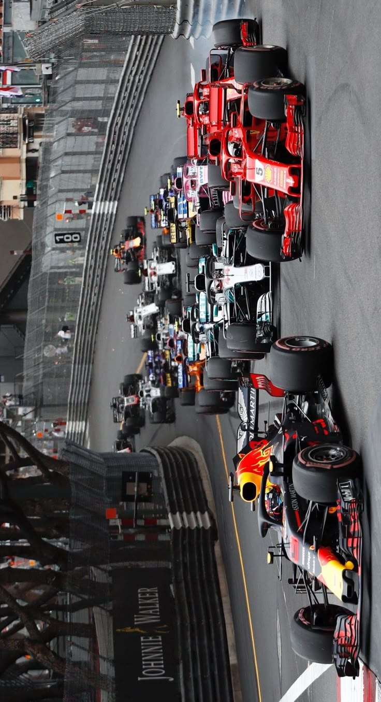

¿Cómo funciona un fin de semana de carrera?
Un fin de semana de Fórmula 1 arranca el viernes, que es el día más técnico y de preparación. Ese día los equipos y pilotos se enfocan en conocer el circuito, probar distintos ajustes en el auto y recopilar datos clave. Se hacen dos sesiones de práctica, donde los pilotos dan muchas vueltas con diferentes niveles de combustible y distintos compuestos de neumáticos. Lo que buscan es entender cómo se comporta el auto en distintas condiciones, cómo reacciona a los cambios de temperatura en la pista, y cuál podría ser la mejor estrategia para la carrera. Los ingenieros analizan todos esos datos para afinar la puesta a punto del coche, con el objetivo de que rinda lo mejor posible el resto del fin de semana.
El sábado comienza con una última sesión de práctica, más corta y enfocada. Ahí ya no se experimenta tanto: se prueban las configuraciones finales y se simulan vueltas rápidas, porque más tarde ese mismo día es la clasificación. La quali es intensa y estratégica, ya que define el orden de salida para la carrera del domingo. Está dividida en tres partes eliminatorias: primero corren todos, y los más lentos van quedando afuera en cada fase, hasta que los diez más rápidos se enfrentan por la pole position. Cada vuelta cuenta, porque salir adelante puede marcar la diferencia entre ganar o quedar atrapado en medio del pelotón.
Y llega el domingo, el gran día, el momento en que todo se pone a prueba. Los autos se alinean en la parrilla según el resultado de la clasificación, después de dar una vuelta de formación para calentar neumáticos y frenos. Una vez que se apagan las luces, empieza la carrera, que puede durar hasta dos horas y está llena de emoción, estrategia y, a veces, caos. Los equipos deben tomar decisiones en tiempo real sobre cuándo parar en boxes, qué neumáticos usar, cómo reaccionar si hay un auto de seguridad o si cambia el clima. Todo esto mientras los pilotos compiten al límite vuelta tras vuelta. Al final, los diez primeros suman puntos, con 25 para el ganador, y si alguien dentro de ese top 10 marca la vuelta más rápida, se lleva un punto extra.
Algunos fines de semana tienen una variante llamada Sprint, donde se corre una mini carrera el sábado y cambia un poco el orden de las sesiones. En ese formato, la clasificación pasa al viernes, la Sprint se corre el sábado (con puntos en juego pero menos que la carrera principal), y el domingo se mantiene la carrera larga y tradicional.
